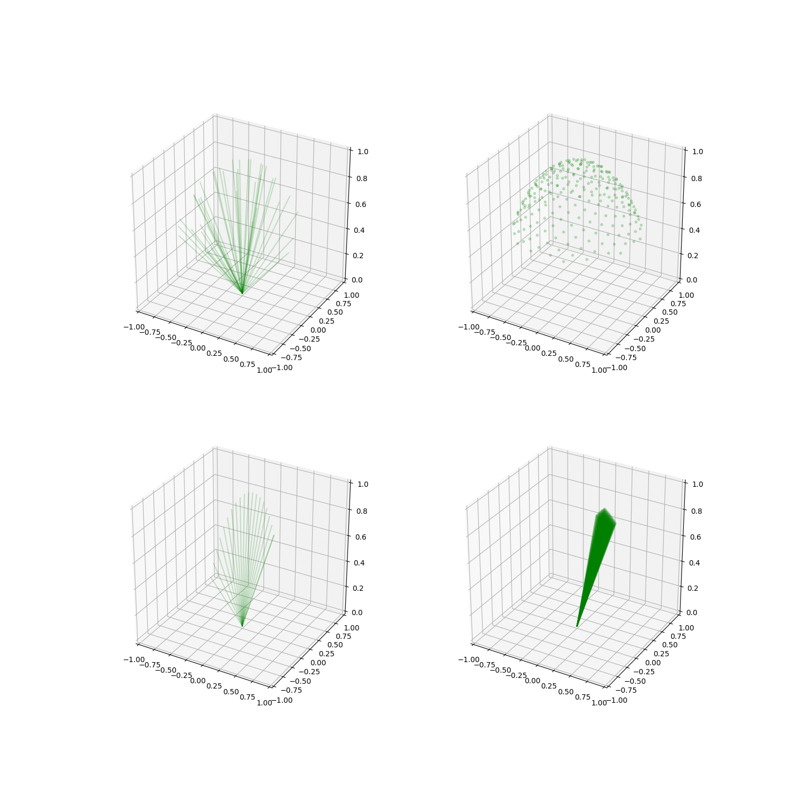

Note
Click here to download the full example code
Some predefined scans¶

Out:
sph_num=1000, num=250
import numpy as np
import matplotlib.pyplot as plt
from mpl_toolkits.mplot3d import Axes3D
import sorts
fig = plt.figure(figsize=(15,15))
def plot_scan(ax, scan, dwells=None, dots=False, alpha = 0.2):
if dwells is None:
point = scan.enu_pointing(np.linspace(0,scan.cycle(),num=int(scan.cycle()/scan.dwell())))
else:
point = scan.enu_pointing(np.linspace(0,scan.dwell()*dwells,num=dwells))
for i in range(point.shape[1]):
if dots:
ax.plot([point[0,i]], [point[1,i]], [point[2,i]], '.g', alpha=alpha)
else:
ax.plot([0, point[0,i]], [0, point[1,i]], [0, point[2,i]], 'g-', alpha=alpha)
ax.axis([-1,1,-1,1])
ax.set_zlim([0,1])
ax = fig.add_subplot(221, projection='3d')
plot_scan(ax, sorts.scans.RandomUniform(), dwells=40)
ax = fig.add_subplot(222, projection='3d')
u = sorts.scans.Uniform()
print(f'sph_num={u.sph_num}, num={u.num}')
plot_scan(ax, u, dots=True)
ax = fig.add_subplot(223, projection='3d')
plot_scan(ax, sorts.scans.Fence())
ax = fig.add_subplot(224, projection='3d')
plot_scan(ax, sorts.scans.Plane(x_offset=100e3))
plt.show()
Total running time of the script: ( 0 minutes 1.186 seconds)